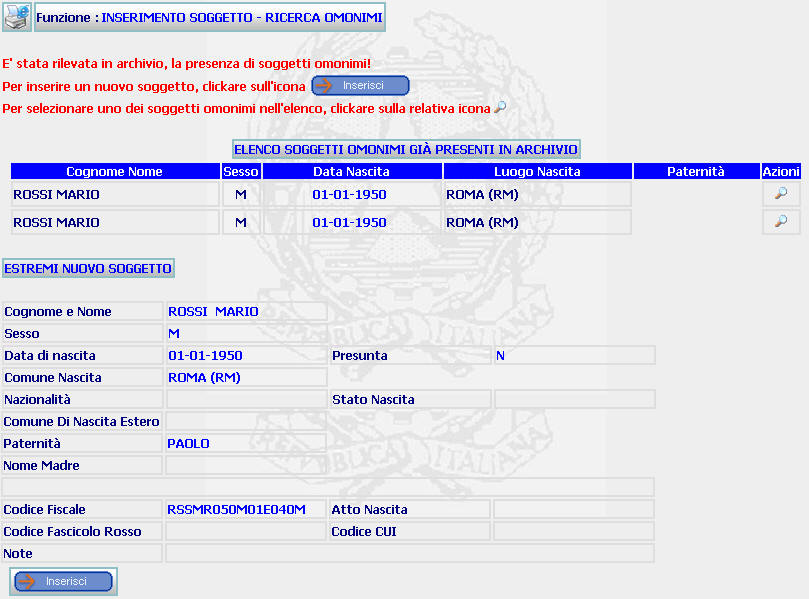

GENERALITA'
INSERIMENTO SOGGETTO - RICERCA OMONIMI: La funzione consente di prendere visione che il soggetto di cui si sta effettuando l'inserimento che si sta effettuando presenta i dati obbligatori uguali a quelli di un soggetto già esistente.
LE MASCHERE VIDEO
La funzione in esame viene realizzata attraverso l'utilizzo della seguente maschera che riporta le seguenti sezioni:
| Sezione, in colore rosso, che avvisa l'utente della presenza di soggetti omonimi e indica quali operazioni effettuare; |
| Sezione "ELENCO SOGGETTI OMONIMI GIA' PRESENTI IN ARCHIVIO" |
| Sezione "ESTREMI NUOVO SOGGETTO" |

COME FARE PER ...
Per inserire un nuovo soggetto avente i dati obbligatori (contrassegnati con un * nella maschera di INSERIMENTO SOGGETTO) uguali ad un soggetto già esistenti ma con dati opzionali diversi, l'utente deve:
Visualizzare eventualmente i dati di dettaglio del soggetto omonimo attraverso l'utilizzo del pulsante
in corrispondenza dei soggetti presenti nella sezione "ELENCO SOGGETTI OMONIMI GIA' PRESENTI IN ARCHIVIO"
Confermare l'inserimento del soggetto omonimo agendo sul bottone . A fronte di questa operazione il sistema inserisce il nuovo soggetto e visualizza la maschera del dettaglio del soggetto inserito.
N.B. Se l'utente a questo punto decide di non inserire nel sistema il soggetto omonimo, il soggetto corrente risuta essere l'ultimo soggetto di cui si è visualizzato il Dettaglio ovvero quello presente nei Dati Correnti visualizzabili nell'area di Navigazione
PULSANTI
Sono presenti i seguenti pulsanti:
|
PULSANTE |
DESCRIZIONE |
|
|
Questo pulsante ha lo
scopo di stampare il contesto (videata) |
|
|
Questo pulsante ha lo scopo di visualizzare i dati di dettaglio del soggetto corrispondente. |
BOTTONI
Oltre ai comandi funzionali relativi al menù verticale sono presenti i seguenti comandi:
|
COMANDI |
DESCRIZIONE |
|
|
A fronte di tale comando, il sistema inserisce il nuovo soggetto nel sistema e visualizza la maschera del dettaglio del soggetto inserito. |